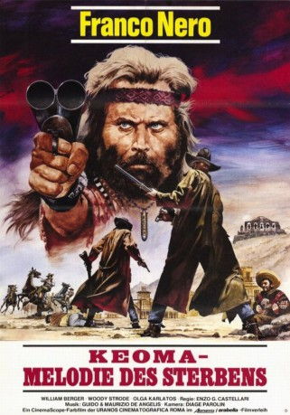

#5793 Keoma - Ein Mann wie ein Tornado
Alternativ: Keoma
 
 IMDB-Wertung: 7.2 / 10
IMDB-Wertung: 7.2 / 10  Metascore: 0
Metascore: 0 
Der Bürgerkrieg ist vorbei, daher kehrt das Halbblut Keoma heim. Die Heimat ist verwüstet, überall Leichenberge, die Pockenseuche grassiert und Caldwell, ein Gangster hat in seiner Heimat die Macht übernommen. Er lässt von seiner Bande alles ermorden was noch fliehen will. Mit Hilfe eines ehemaligen Sklaven sagt Keoma Caldwell den Kampf an.
Jahr: 1976
Dauer: 101 Minuten
FSK: 16
Land: Italien Studio: Adria FilmverleihTonspuren: DD2.0 - ,
Untertitel: Deutsch,
Auflösung: 1080p (1920x816) Größe: 6983 MB
Genre: Drama, Western
Regisseur: Enzo G. Castellari
Drehbuch: Nelson Gidding
Soundtrack:
Darsteller:
 Franco Nero als Keoma Shannon
Franco Nero als Keoma Shannon William Berger als William Shannon
William Berger als William Shannon- Orso Maria Guerrini als Butch Shannon
- Joshua Sinclair als Sam Shannon
- Woody Strode als George
- Armando Bottin als Member of Caldwell's Gang , uncredited
- Olga Karlatos als Liza Farrow
- Gabriella Giacobbe als The Witch
- Antonio Marsina als Lenny Shannon
 Donald O'Brien als Caldwell
Donald O'Brien als Caldwell- Leonardo Scavino als Doctor
- Wolfango Soldati als Confederate Soldier
- Victoria Zinny als Brothel Owner
- Alfio Caltabiano als Member of Caldwell's Gang
- Nick Alexander als Butch Shannon , uncredited
- Domenico Cianfriglia als Member of Caldwell's Gang , uncredited
- Giovanni Cianfriglia als Gang Member , uncredited
- Pierangelo Civera als Plague Victim , uncredited
- Roberto Dell'Acqua als Member of Caldwell's Gang , uncredited
- Larry Dolgin als Sam Shannon , uncredited
- Augusto Funari als Member of Caldwell's Gang , uncredited
- Giglio Gigli als Member of Caldwell's Gang , uncredited
- Roberto Messina als Caldwell Man in Saloon , uncredited
- Riccardo Pizzuti als Member of Caldwell's Gang , uncredited
- Angelo Ragusa als Member of Caldwell's Gang , uncredited
- Sergio Ruggeri als Man Hit in the Saloon , uncredited
- Susan Spafford als Liza Farrow , uncredited
- Franco Ukmar als Bandit , uncredited
- Sergio Ukmar als Member of Caldwell's Gang , uncredited
Datei: X:\HD-Western-1960-1979\Keoma - Ein Mann wie ein Tornado (1976, FSK16, 1920x816).mkv seit 22.03.2017
Festplatte: HD Eastern+Western
 Es gibt insgesamt 110 Filme in der Gruppe 'HD-Western-1960-1979'
Es gibt insgesamt 110 Filme in der Gruppe 'HD-Western-1960-1979'